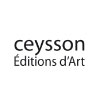

Les Éditions Ceysson réalisent depuis 2005 des beaux livres, des catalogues d'expositions et des monographies d'artiste. Elles présentent de manière privilégiée des monographies d'artistes modernes et contemporains.
Ces livres d'art se distinguent par la proximité qu'ils permettent avec l'artiste et sa création : des entretiens, propos et témoignages inédits des artistes contemporains et de leurs proches y sont recueillis. Des textes d'historiens et philosophes de l'art, critiques et poètes, fournissent également un éclairage scientifique et pédagogique. Certaines monographies font l'objet d'éditions bilingues.
Les Éditions Ceysson proposent pour la plupart des titres, un support multimédia. Ainsi, nos livres sont accompagnés de DVD, cédéroms, ou de sites Internet reprenant le contenu des ouvrages et pouvant servir de base de gestion et de consultation aux musées.

Découvrez notre catalogue
